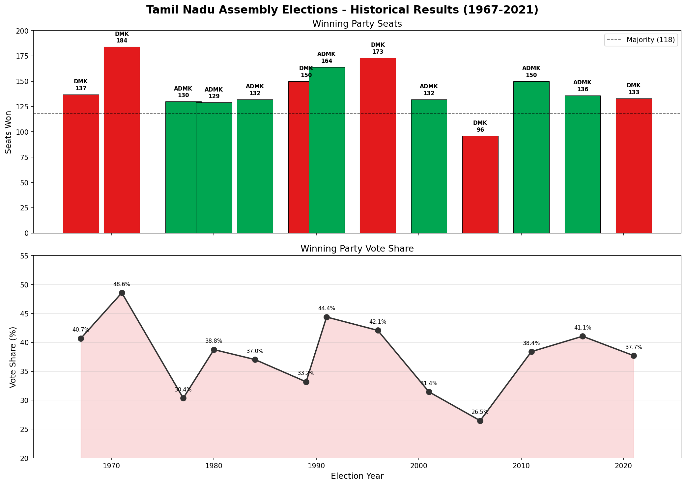
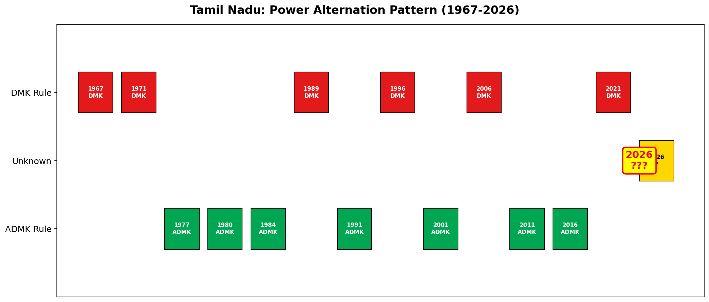
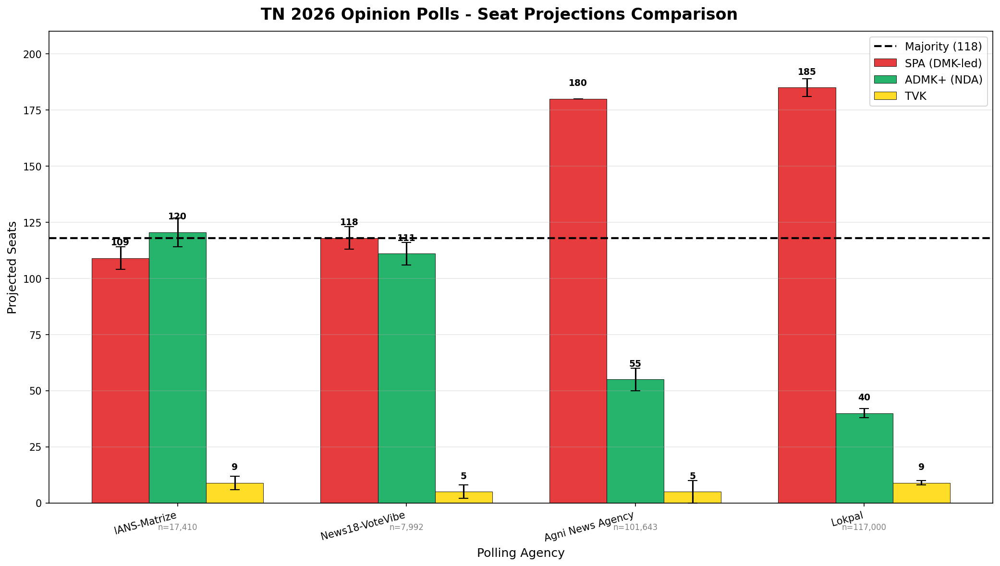
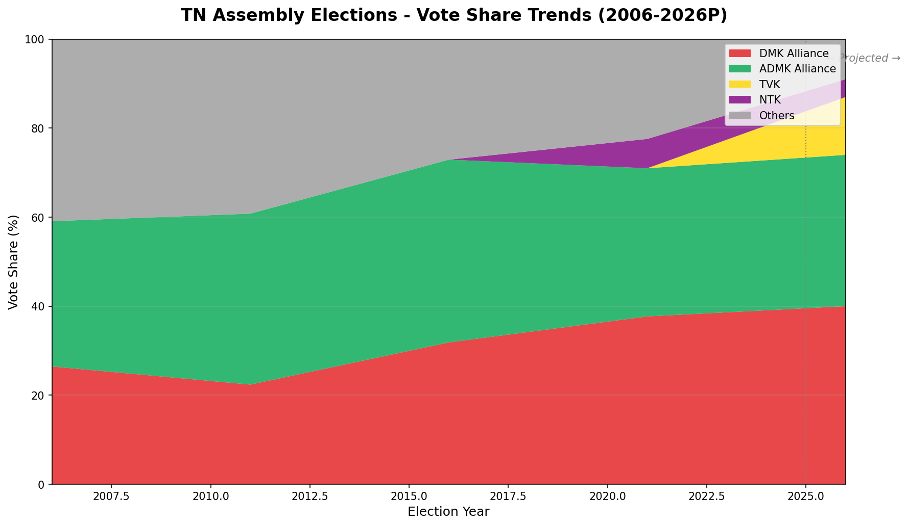
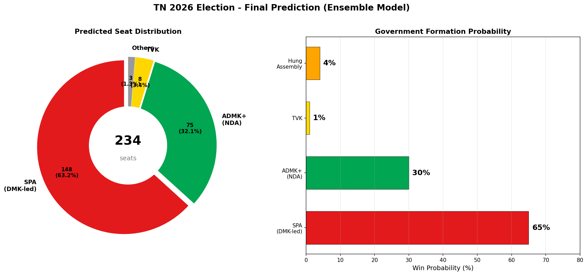
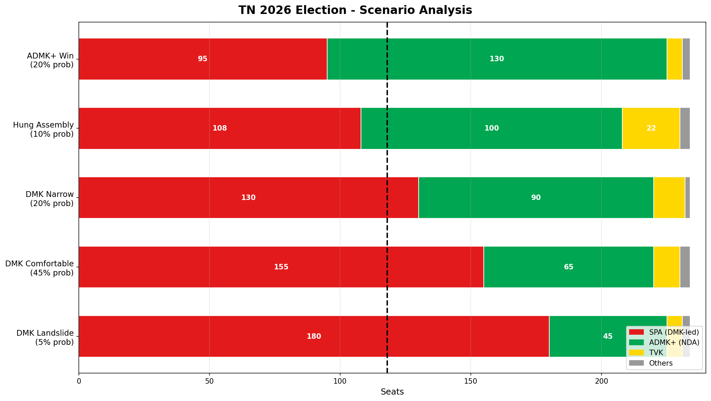

Comprehensive Prediction Report
The DMK-led Secular Progressive Alliance (SPA) is the clear frontrunner to win the 2026 Tamil Nadu Assembly Election, with an ensemble prediction of ~149 seats (range: 132–166) and a 65% win probability. The ADMK+ (NDA) alliance is projected at ~73 seats (range: 56–89) with a 30% win probability. TVK (Vijay) is expected to win ~8 seats but will drain 12–15% of votes, primarily hurting the ADMK+.
Despite Tamil Nadu's iron-clad anti-incumbency tradition — DMK has never won consecutive Assembly elections — unprecedented conditions (ADMK organizational collapse post-Jayalalithaa, TVK vote-splitting, DMK's 2024 Lok Sabha clean sweep of 39/39 seats) make this election a likely exception.
Likely Outcome: DMK-led SPA forms government | Predicted CM: M. K. Stalin (DMK)
| Party | Seats Contested | Key Leader |
|---|---|---|
| DMK | 176 | CM M.K. Stalin |
| INC | 28 | K.S. Alagiri |
| DMDK | 10 | Premalatha Vijayakanth |
| VCK | 8 | Thol. Thirumavalavan |
| CPI(M) | 5 | K. Balakrishnan |
| CPI | 5 | R. Mutharasan |
| MDMK | 4 | Vaiko |
| Others | ~2 | IUML, KMDK, MJK etc. |
Key Additions: DMDK (from NDA), OPS faction joining DMK is a coup. Broadest alliance since 2021.
| Party | Seats Contested | Key Leader |
|---|---|---|
| AIADMK | 172 | Edappadi K. Palaniswami |
| BJP | 33 | K. Annamalai |
| PMK | 18 | Anbumani Ramadoss |
| AMMK | 11 | T.T.V. Dhinakaran |
Key Losses: Lost DMDK and OPS to DMK. Sasikala running separate front. Organizational capacity reduced.
~81 seats, aimed at spoiling ADMK in Vanniyar belt.
Tamil Nadu has alternated between DMK and ADMK with 67% regularity since 1967. The DMK has never won consecutive Assembly elections post-1971 (0/5 attempts: 1971→1977, 1989→1991, 1996→2001, 2006→2011, 2021→2026?).
| SPA | ADMK+ | TVK | Confidence | |
|---|---|---|---|---|
| Seats | 95–120 | 100–140 | 5–20 | Medium |
| Win Prob | 35% | 50% | 1% |
Verdict: Favors ADMK. But pattern is not absolute — ADMK itself won back-to-back in 1977-80-84 and 2011-16.
The 2024 Lok Sabha gave SPA a 42.1% vote share and a 39/39 seat sweep. Adjusting for TVK emergence, united NDA, and Sasikala/PMK(R) draining ADMK votes:
| Alliance | 2024 LS Vote% | 2026 Projected Vote% | Projected Seats |
|---|---|---|---|
| SPA (DMK-led) | 42.1% | 41.1% | 163 |
| ADMK+ (NDA) | 34.7% (split) | 27.3% | 58 |
| TVK | — | 12.0% | 7 |
| NTK | 5.2% | 4.0% | — |
Verdict: Strongly favors DMK. But LS→Assembly swing is historically unreliable.
| Agency | Date | Sample | SPA Seats | ADMK+ Seats | TVK Seats | SPA % | ADMK % | TVK % |
|---|---|---|---|---|---|---|---|---|
| IANS-Matrize | Mar 15 | 17,410 | 104–114 | 114–127 | 6–12 | 37.5% | 39.5% | 14.5% |
| News18-VoteVibe | Mar 23 | 7,992 | 113–123 | 106–116 | 2–8 | 40.0% | 38.0% | 15.0% |
| Agni | Mar 23 | 101,643 | 180 | 50–60 | 0–10 | 44.9% | 38.5% | 9.7% |
| Lokpal | Apr 1 | 117,000 | 181–189 | 38–42 | 8–10 | 40.1% | 29.0% | 23.9% |
Bayesian-Weighted Aggregate: SPA 167 seats, ADMK+ 62 seats, TVK 7 seats
Factors Favoring DMK (+7.3/10):
Factors Against DMK (-5.5/10):
Net Incumbency Score: +1.8 → Slightly positive environment
| SPA | ADMK+ | TVK | Confidence | |
|---|---|---|---|---|
| Seats | 140–170 | 50–80 | 5–15 | Medium |
Using historical TN data calibration (power = 2.5 for multi-corner contests):
| Scenario | SPA Vote → Seats | ADMK+ Vote → Seats | TVK Vote → Seats |
|---|---|---|---|
| Close 3-way (39 vs 36 vs 14%) | 121 | 99 | 9 |
| DMK lead (42 vs 34 vs 12%) | 140 | 82 | 6 |
| DMK dominant (45 vs 32 vs 10%) | 156 | 67 | 4 |
| ADMK lead (36 vs 40 vs 13%) | 96 | 125 | 8 |
Historical winner seat ratio: 1.42x–1.93x of vote share.
| Alliance | Core Vote | Transfer Eff. | Additions | Leakage | Net Vote |
|---|---|---|---|---|---|
| SPA (DMK-led) | 38.0% | 85% | +2.0% | -3.0% | 31.3% |
| ADMK+ (NDA) | 34.0% | 75% | +3.0% | -7.0% | 21.5% |
| TVK | 5.0% | 90% | +8.0% | — | 12.5% |
| NTK | 4.0% | 95% | — | -0.5% | 3.3% |
Key Caste Factors:
Model Weights:
| Model | Weight | Rationale |
|---|---|---|
| Opinion Polls (M3) | 30% | Largest direct data, despite divergence |
| Alliance Arithmetic (M6) | 20% | Ground-level structural analysis |
| Swing Analysis (M2) | 15% | Recent electoral performance |
| Incumbency Factor (M4) | 15% | Governance assessment |
| Historical Pattern (M1) | 10% | Long-term trend (weakened by conditions) |
| Vote→Seat Conversion (M5) | 10% | Mathematical backing |
| Alliance | Predicted Seats | Range | Win Probability |
|---|---|---|---|
| SPA (DMK-led) | 149 | 132–166 | 65% |
| ADMK+ (NDA) | 73 | 56–89 | 30% |
| TVK | 9 | 3–13 | 1% |
| Others (NTK etc.) | 3 | 0–5 | 1% |
| Hung Assembly | — | — | 4% |
Likely Outcome: DMK-led SPA forms government | Predicted CM: M. K. Stalin (DMK)
DMK welfare schemes hold urban and rural base. TVK eats into ADMK solidly. Alliance discipline maintained.
| SPA | ADMK+ | TVK | Others |
|---|---|---|---|
| 145–165 | 55–75 | 5–12 | 0–3 |
→ Stalin continues as CM. Stable government. Historic first consecutive win for DMK.
Anti-incumbency partially kicks in. TVK surprises in some urban pockets. ADMK performs better in Western TN.
| SPA | ADMK+ | TVK | Others |
|---|---|---|---|
| 120–144 | 75–100 | 8–15 | 0–5 |
→ DMK forms government but with thinner margin. Minor coalition management needed.
TVK performs much better than expected (>20 seats). Both DMK and ADMK fall short of majority.
| SPA | ADMK+ | TVK | Others |
|---|---|---|---|
| 100–117 | 85–110 | 15–30 | 2–8 |
→ Post-election coalition negotiations. TVK becomes kingmaker. Constitutional crisis possible.
Anti-incumbency wave materializes. TVK flops. United NDA transfers votes efficiently. PMK delivers Vanniyar belt.
| SPA | ADMK+ | TVK | Others |
|---|---|---|---|
| 85–110 | 115–140 | 2–8 | 0–3 |
→ EPS becomes CM. NDA coalition government. BJP gets significant cabinet presence.
2024 LS momentum fully sustained. TVK massively splits ADMK. Welfare schemes create wave-like conditions.
| SPA | ADMK+ | TVK | Others |
|---|---|---|---|
| 170–190 | 35–50 | 5–10 | 0–3 |
→ Historic repeat win. ADMK faces existential crisis. TVK established as third force despite low seats.
| Region | Seats | Lean | Key Factor |
|---|---|---|---|
| Chennai & Suburbs | ~30 | DMK strong | DMK fortress. TVK has urban youth appeal |
| Northern TN (Tiruvallur, Kanchipuram) | ~25 | DMK | Strong DMK base, Vanniyar split helps |
| Western TN (Coimbatore, Tiruppur, Erode, Salem) | ~45 | ADMK/Swing | ADMK stronghold. TVK and BJP competitive |
| Southern TN (Madurai, Tirunelveli, Thoothukudi) | ~40 | Swing | Thevar belt traditionally ADMK. DMK competes |
| Delta Region (Thanjavur, Nagapattinam) | ~25 | DMK | Agricultural belt, DMK dominance |
| Kongu Belt (Namakkal, Dharmapuri, Krishnagiri) | ~30 | ADMK/NDA | Gounder dominance, BJP's best region |






Data Sources: Election Commission of India (ECI), Wikipedia, IANS-Matrize, News18-VoteVibe, Agni News Agency, Lokpal